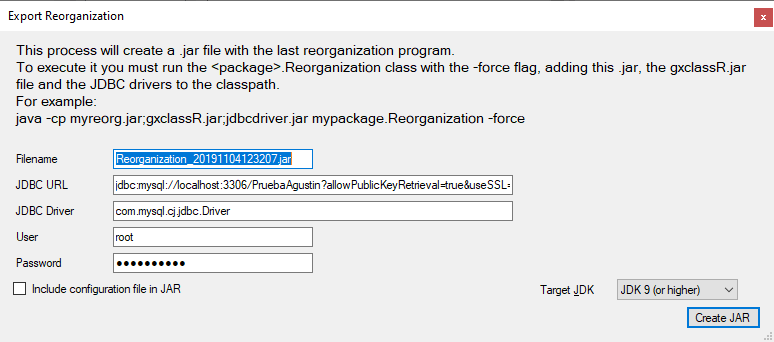

Exporting the reorganization and executing it is part of the deployment process of an application. GeneXus creates (and by default also runs) the reorganization programs during Build All/Rebuild All and specifically using Build / Create Database Tables, or Build / Impact Database Tables. The Export Reorganization option can be found under Build / Export Reorganization and lets you create a package with the files required to execute the reorganization programs that have been built in the last build process. That package can be sent to another execution environment (e.g. Production Environment) to be executed there to create or reorganize the corresponding Database schemas.  Java SpecificsIn a Java Environment, the Export Reorganization option creates a .jar file with the last reorganization programs. The Dialog asks for
As a result, a .jar with the reorganization files is created. In the containing folder, the JDBC driver is copied too. To execute it, you may run java -cp Reorg.jar; gxclassR.jar;<drivers jdbc> <package name if it has been defined>.Reorganization –force -nogui More information regarding the flags: Create Database Options property If the –force option is not included, an error such as the one below will be displayed: There are no reorganization specifications If the -nogui option is not included, when running on non-Windows platforms that don’t have a graphic interface, the following error may occur:
Exception in thread "main" java.lang.InternalError: Can't connect to X11 window server using ':0.0' as the value of the DISPLAY variable.
at sun.awt.X11GraphicsEnvironment.initDisplay(Native Method)
at sun.awt.X11GraphicsEnvironment.<clinit>(X11GraphicsEnvironment.java:134)
at java.lang.Class.forName0(Native Method)
at java.lang.Class.forName(Class.java:141)
at java.awt.GraphicsEnvironment.getLocalGraphicsEnvironment(GraphicsEnvironment.java:62)
at java.awt.Window.init(Window.java:231)
at java.awt.Window.<init>(Window.java:275)
at java.awt.Frame.<init>(Frame.java:401)
at com.genexus.GXReorganization.showUI(GXReorganization.java:168)
at com.genexus.GXReorganization.executeReorg(GXReorganization.java:228)
at com.genexus.GXReorganization.executeReorg(GXReorganization.java:215)
at Reorganization.main(Reorganization.java)
To avoid using a graphic interface, the –nogui option should be used. For example, on Linux the command to be executed would be similar to: java -cp Reorg.jar:gxclassR.jar:<drivers jdbc> <package name if it has been defined>.Reorganization –nogui –force .NET SpecificsIn a .NET Environment, the Export Reorganization option creates a .zip file with the last reorganization programs. The Dialog asks for
As a result, a .zip with the reorganization files is created. To execute the reorganization, unzip the files and execute reor.exe. You may use some flags, like -force, -nogui, etc. reor.exe -nogui -force TroubleshootingThe following exception may occurr if the reorganization.zip file is downloaded from Internet and Windows marks it as "blocked" The solution is:
.NET Core Specifics.NET Core packages the reorg as a zip file as well. To execute the reorganization program run the following command: dotnet Reor.dll -nogui -noverifydatabaseschema -force
More information regarding the flags: Create Database Options property AvailabilityThis option is available as of GeneXus 15 Upgrade 4. See Also
|
| Backlinks |
| Toc:Application Deployment tool |
| How to Deploy an Application to Docker |
| Reorganization Deployment MSBuild Tasks |